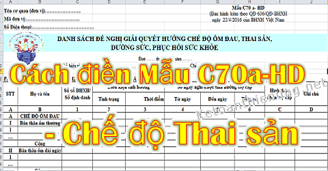

Hướng dẫn cách ghi Mẫu C70a-HD Chế độ thai sản, ốm đau, dưỡng sức sau sinh, phục hồi sức khỏe ban hành kèm theo Quyết định 636/QĐ-BHXH mới nhất năm 2019, chi tiết các trường hợp.
Chú ý:
- Kể từ ngày 1/5/2019 Mẫu C70a-HD theo QĐ 636 sẽ hết hiệu lực.
-> Thay vào đó là Mẫu 01B-HSB theo Quyết định 166/QĐ-BHCH.
-> Tải về tại đây nhé: Mẫu 01B-HSB
------------------------------------------------------------------------------------------------

1. Mục đích:
- Là căn cứ đề nghị giải quyết trợ cấp ốm đau, thai sản, dưỡng sức, phục hồi sức khỏe đối với người lao động trong đơn vị;
-----------------------------------------------------------------------------------------------
2. Phương pháp lập và trách nhiệm ghi:
- Danh sách này do đơn vị sử dụng lao động lập cho từng đợt.
- Tùy thuộc vào số người hưởng trợ cấp phát sinh, đơn vị có thể đề nghị làm nhiều đợt trong tháng, theo tháng hoặc theo quý. Trường hợp danh sách có nhiều tờ thì giữa các tờ phải có dấu giáp lai.
- Góc trên, bên trái của danh sách phải ghi rõ tên đơn vị sử dụng lao động, mã số đơn vị đăng ký tham gia BHXH.
Phần đầu: Ghi rõ đợt trong tháng thuộc quý, năm đề nghị xét duyệt; số hiệu tài khoản, nơi đơn vị mở tài khoản để làm cơ sở cho cơ quan BHXH chuyển tiền.
- Cơ sở để lập danh sách ở phần này là hồ sơ giải quyết chế độ ốm đau, thai sản, dưỡng sức, phục hồi sức khỏe theo quy định như:
+ Giấy chứng nhận nghỉ việc hưởng BHXH
+ Giấy khám chữa bệnh của con, bản sao sổ y bạ của con, phiếu hội chẩn, giấy khám thai
+ Bản sao giấy chứng sinh, bản sao giấy khai sinh, giấy ra viện
+ Quyết định công nhận việc nuôi con nuôi...
+ và Danh sách được cơ quan BHXH duyệt của đợt trước.
Lưu ý: Khi lập danh sách này phải phân loại chế độ phát sinh theo trình tự ghi trong danh sách, những nội dung không phát sinh chế độ thì không cần hiển thị; Đơn vị tập hợp hồ sơ đề nghị hưởng chế độ của người lao động để nộp cho cơ quan BHXH theo trình tự ghi trong danh sách.
------------------------------------------------------------------------------------------------------
PHẦN 1: DANH SÁCH ĐỀ NGHỊ HƯỞNG CHẾ ĐỘ MỚI PHÁT SINH- Phần này gồm danh sách người lao động đề nghị giải quyết hưởng chế độ mới phát sinh trong đợt.
Cột A, B: Ghi số thứ tự, họ và tên đầy đủ của người lao động trong đơn vị đề nghị giải quyết trợ cấp BHXH mới phát sinh.
Cột 1: Ghi số sổ BHXH hoặc số định danh của người lao động trong đơn vị đề nghị giải quyết trợ cấp BHXH.
Cột 2: Ghi điều kiện tính hưởng trợ cấp BHXH về tình trạng, cụ thể từng trường hợp như sau:
- Đối với người hưởng chế độ ốm đau:
+ Trường hợp người lao động bị bệnh thông thường thì để trống và mặc nhiên được hiểu là bị bệnh thông thường; trường hợp ngày nghỉ hàng tuần của đơn vị thực hiện theo quy định chung thì không phải ghi và mặc nhiên được hiểu là ngày thứ Bảy và Chủ nhật hoặc ngày Chủ nhật tùy theo quy định đối với từng loại hình đơn vị;
- Trường hợp cá biệt ngày nghỉ hàng tuần của người lao động không rơi vào ngày nghỉ hàng tuần theo quy định chung thì cần ghi rõ.
Ví dụ: Ngày nghỉ hàng tuần vào thứ Hai hoặc thứ Ba thì ghi: T2 hoặc T3;
+ Trường hợp bản thân người lao động bị bệnh cần chữa trị dài ngày thì ghi: BDN.
--------------------------------------------------------------------------------------
- Đối với chế độ thai sản, Cột 2 ghi như sau:+ Đối với khám thai: ghi ngày nghỉ hàng tuần giống như trường hợp đối với người hưởng chế độ ốm đau;
- Để trống nếu thai bình thường.
- Thai bệnh lý thì ghi: BL
+ Đối với sảy thai, nạo, hút thai hoặc thai chết lưu: Ghi số tuần của thai.
Ví dụ: thai 02 tuần tuổi thì ghi: 02T;
+ Đối với sinh con, nhận nuôi con nuôi:
* Trường hợp thông thường: Ghi sinh con (SC) hoặc nuôi con nuôi(NCN)/số con được sinh hoặc số con được nhận nuôi con nuôi/số tháng tuổi của con (trong trường hợp con dưới 6 tháng tuổi bị chết);
Trường hợp sinh một con hoặc nhận một con làm con nuôi thì không phải ghi và mặc nhiên được hiểu là sinh một con hoặc nhận một con làm con nuôi;
Nếu con dưới hai tháng tuổi chết thì ghi -2, nếu con từ hai tháng tuổi trở lên chết thì ghi 2, trường hợp sinh từ hai con trở lên mà vẫn còn có con sống thì không phải ghi thông tin này.
(ví dụ sinh hai con thì ghi: SC/2, nhận một con làm con nuôi thì ghi NCN, sinh hai con mà các con đều bị chết khi dưới 2 tháng tuổi thì ghi SC/2/-2);
* Trường hợp mẹ phải nghỉ dưỡng thai (khoản 3 Điều 31 Luật BHXH): Ghi tương tự như trường hợp thông thường.
* Trường hợp mẹ chết sau khi sinh (khoản 4 Điều 34) là trường hợp mẹ có tham gia BHXH mà cha hưởng chế độ để chăm con thì ghi: số con được sinh/số chứng minh thư hoặc số hộ chiếu hoặc số thẻ căn cước của người mẹ trong trường hợp giấy khai sinh, giấy chứng sinh, giấy chứng tử không thể hiện số chứng minh thư hoặc số hộ chiếu hoặc số thẻ căn cước của người mẹ; trường hợp sinh một con thì không cần ghi số con và mặc nhiên được hiểu là sinh một con
(Ví dụ: Vợ sinh hai con, số chứng minh thư của vợ là 021753293 thì ghi: 2/CMT021753293, nếu là số hộ chiếu thì ghi: 2/HC......( sau HC là số hộ chiếu); nếu là thẻ căn cước thì ghi: 2/CC.....(sau CC là số căn cước); trường hợp người cha không nghỉ việc thì ghi thông tin của người cha như trên trong danh sách tại đơn vị của người vợ;
* Trường hợp mẹ chết sau khi sinh hoặc mẹ gặp rủi ro không còn đủ sức khỏe để chăm con (khoản 6 Điều 34) là trường hợp chỉ có cha tham gia BHXH mà cha hưởng chế độ để chăm con thì ghi tương tự như trường hợp mẹ chết sau khi sinh (khoản 4 Điều 34);
-------------------------------------------------------------------------------
+ Đối với lao động nữ mang thai hộ sinh: Ghi số trẻ được sinh/số ngày tuổi của con (trong trường hợp con dưới 6 tháng tuổi bị chết);- Trường hợp sinh một đứa trẻ thì không phải ghi và mặc nhiên được hiểu là sinh một đứa trẻ;
- Nếu đứa trẻ dưới 60 ngày tuổi chết thì ghi -60, nếu đứa trẻ từ 60 ngày tuổi trở lên chết thì ghi 60, trường hợp sinh từ hai đứa trẻ trở lên mà vẫn còn có đứa trẻ sống thì không phải ghi thông tin này
(ví dụ sinh hai đứa trẻ thì ghi: 2, sinh hai đứa trẻ mà các đứa trẻ đều bị chết khi dưới 60 ngày tuổi thì ghi 2/-60).
+ Đối với lao động nữ nhờ mang thai hộ nhận con: Ghi số con/số tháng tuổi của con (trong trường hợp con dưới 6 tháng tuổi bị chết);
- Trường hợp có một con thì không phải ghi và mặc nhiên được hiểu là có một con;
- Nếu con dưới hai tháng tuổi chết thì ghi -2, nếu con từ hai tháng tuổi trở lên chết thì ghi 2, trường hợp có từ hai con trở lên mà vẫn còn có con sống thì không phải ghi thông tin này
(ví dụ có hai con thì ghi: 2, có hai con mà các con đều bị chết khi dưới 2 tháng tuổi thì ghi 2/-2);
+ Đối với lao động nam nghỉ việc khi vợ sinh con: ghi ngày nghỉ hàng tuần giống như trường hợp đối với người hưởng chế độ ốm đau; và ghi thêm số con được sinh/số chứng minh thư hoặc số hộ chiếu hoặc số thẻ căn cước của người mẹ (trong trường hợp giấy khai sinh, giấy chứng sinh, giấy chứng tử không thể hiện số chứng minh thư hoặc số hộ chiếu hoặc số thẻ căn cước của người mẹ cách ghi theo hướng dẫn đã nêu trên)/phương thức sinh con hoặc số tuần tuổi của con;
- Nếu sinh con phải phẫu thuật thì ghi thêm: PT;
- Nếu sinh con dưới 32 tuần tuổi thì ghi thêm: 32, nếu sinh một con dưới 32 tuần tuổi mà phải phẫu thuật thì chỉ cần ghi thêm hoặc PT hoặc 32;
- Trường hợp vợ sinh thường một con từ 32 tuần tuổi trở lên thì không phải ghi thêm số con, phương thức sinh con và số tuần tuổi của con và mặc nhiên được hiểu là sinh thường một con từ 32 tuần tuổi trở lên;
- Nếu vợ sinh một lần từ hai con trở lên thì ghi thêm theo số con được sinh;
- Trường hợp sinh từ hai con trở lên và phải phẫu thuật thì chỉ cần ghi thêm đầy đủ số con và phương thức sinh
(Ví dụ: Vợ sinh ba con phải phẫu thuật và ngày nghỉ hàng tuần thì ghi: 3/PT);
(Ví dụ: vợ sinh ba con phải phẫu thuật, số chứng minh thư của vợ là 021753293 thì ghi: 3/CMT021753293/PT);
+ Đối với lao động nam hưởng trợ cấp một lần khi vợ sinh con: Ghi số con được sinh/số chứng minh thư hoặc số hộ chiếu hoặc số thẻ căn cước của vợ; nếu vợ sinh một con thì không phải ghi số con và mặc nhiên được hiểu là vợ sinh 1 con.
(Ví dụ: Vợ sinh hai con và số chứng minh thư của vợ là 021753293 thì ghi: 2/021753293);
----------------------------------------------------------------------------------
- Đối với thực hiện các biện pháp tránh thai:- Nếu đặt vòng tránh thai ghi: ĐV; nếu thực hiện biện pháp triệt sản thì ghi: TS;
-------------------------------------------------------------------------------
- Đối với nghỉ dưỡng sức, phục hồi sức khỏe+ Đối với nghỉ dưỡng sức, phục hồi sức khỏe sau ốm đau:
- Trường hợp ốm đau do mắc bệnh thông thường thì để trống và mặc nhiên được hiểu là bị bệnh thông thường;
- Nếu ốm đau phải phẫu thuật thì ghi: PT;
- Nếu ốm đau do mắc các bệnh cần chữa trị dài ngày thì ghi: BDN;
- Đối với trường hợp nghỉ dưỡng sức, phục hồi sức khỏe phát sinh theo quy định của Luật BHXH năm 2006, thì sau đó ghi tiếp hình thức nghỉ, nếu nghỉ tại gia đình thì không phải ghi và mặc nhiên được hiểu là nghỉ tại gia đình, nếu nghỉ tập trung thì ghi: TT (Ví dụ: Nghỉ dưỡng sức tập trung do mắc bệnh thông thường nhưng phải phẫu thuật thì ghi: PT/TT);
+ Đối với nghỉ dưỡng sức, phục hồi sức khỏe sau thai sản:
- Trường hợp nghỉ sau khi sinh thường một con thì để trống;
- Nghỉ sau khi sảy thai, nạo, hút thai, thai chết lưu thì ghi: ST;
- Nếu nghỉ do sinh con phải phẫu thuật thì ghi: PT;
- Nếu sinh một lần từ 2 con trở lên thì ghi SC02,
- Đối với trường hợp nghỉ dưỡng sức, phục hồi sức khỏe phát sinh theo quy định của Luật BHXH năm 2006, thì sau đó ghi tiếp hình thức nghỉ, nếu nghỉ tại gia đình thì không phải ghi và mặc nhiên được hiểu là nghỉ tại gia đình, nếu nghỉ tập trung thì ghi: TT. Cách thức ghi như ví dụ nêu trên.
+ Đối với nghỉ dưỡng sức, phục hồi sức khỏe sau tai nạn lao động, bệnh nghề nghiệp: Ghi tỷ lệ suy giảm khả năng lao động;
- Trường hợp nghỉ tại gia đình thì để trống và mặc nhiên được hiểu là nghỉ tại gia đình, nếu nghỉ tại cơ sở tập trung thì ghi: TT
(Ví dụ: Nghỉ do suy giảm khả năng lao động 35% tại gia đình thì ghi: 35, cũng trường hợp này nếu nghỉ tại cơ sở tập trung thì ghi: 35/TT......);
- Nếu nghỉ dưỡng sức, phục hồi sức khỏe từ ngày 01/7/2016 trở đi thì không phài ghi hình thức nghỉ dưỡng sức.
-----------------------------------------------------------------------------------------------------
Cột 3: Điều kiện tính hưởng về thời điểm- Trường hợp nghỉ việc để chăm sóc con ốm mà Giấy ra viện, Giấy chứng nhận nghỉ việc hưởng BHXH không thể hiện ngày, tháng, năm sinh của con thì ghi ngày, tháng, năm sinh của con.
Ví dụ: Con sinh ngày 08 tháng 7 năm 2019 thì ghi: 08/07/2019
- Ghi ngày, tháng, năm trở lại làm việc sau ốm đau, thai sản đối với trường hợp nghỉ dưỡng sức, phục hồi sức khỏe sau ốm đau, thai sản. Cách thức ghi như ví dụ nêu trên;
- Ghi ngày, tháng, năm Hội đồng Giám định y khoa kết luận mức suy giảm khả năng lao động do tai nạn lao động, bệnh nghề nghiệp đối với trường hợp nghỉ dưỡng sức, phục hồi sức khỏe sau tai nạn lao động, bệnh nghề nghiệp. Cách thức ghi như ví dụ nêu trên.
- Các trường hợp khác để trống.
-------------------------------------------------------------------------
Cột 4: Ghi ngày, tháng, năm đầu tiên người lao động thực tế nghỉ việc hưởng chế độ theo quy định. Cách thức ghi như ví dụ nêu tại Cột 3;
--------------------------------------------------------------------------
Cột 5: Ghi ngày, tháng, năm cuối cùng người lao động thực tế nghỉ hưởng chế độ theo quy định. Cách thức ghi như ví dụ nêu tại Cột 3;
--------------------------------------------------------------------------
Cột 6: Ghi tổng số ngày thực tế người lao động nghỉ việc trong kỳ đề nghị giải quyết. Cộng tổng ở từng loại chế độ.
-----------------------------------------------------------------------------
Cột C: Ghi hình thức người lao động đăng ký nhận tiền trợ cấp: Nếu để trống thì mặc nhiên được hiểu là nhận tiền mặt thông qua người sử dụng lao động; nếu nhận tiền qua tài khoản tiền gửi thì ghi số tài khoản, tên ngân hàng, chi nhánh nơi người lao động mở tài khoản; nếu nhận tiền trực tiếp tại cơ quan BHXH thì ghi: BHXH; nếu nhận tiền trực tiếp tại tổ chức dịch vụ được cơ quan BHXH ủy quyền thì ghi: DVBH.Ví Dụ: Ông Lê Minh Khang, Số tài khoản 84910234xxx, ngân hàng Nông nghiệp và phát triển nông thôn chi nhánh Thăng Long
---------------------------------------------------------------------------
PHẦN 2: DANH SÁCH ĐỀ NGHỊ ĐIỀU CHỈNH SỐ ĐÃ ĐƯỢC GIẢI QUYẾT- Phần danh sách này được lập đối với người lao động đã được cơ quan BHXH giải quyết hưởng trợ cấp trong các đợt trước nhưng do tính sai mức hưởng hoặc phát sinh về hồ sơ, về chế độ hoặc tiền lương... làm thay đổi mức hưởng, phải điều chỉnh lại theo quy định.
Cột A, B, 1: Ghi như hướng dẫn tại Phần I.
Cột 2: Ghi Đợt …tháng 09 năm 2026 cơ quan BHXH đã xét duyệt được tính hưởng trợ cấp trước đây trên Danh sách giải quyết hưởng chế độ ốm đau, thai sản, dưỡng sức, phục hồi sức khỏe (mẫu C70b-HD tương ứng đợt xét duyệt lần trước của cơ quan BHXH) mà ở có tên người lao động được đề nghị điều chỉnh trong đợt này.
Ví dụ: Đợt 3 tháng 02 năm 2018
Cột 3: Diễn giải nội dung đề nghị điều chỉnh như:
+ Điều chỉnh tăng mức hưởng trợ cấp: Các trường hợp đề nghị điều chỉnh tăng mức hưởng trợ cấp thông thường là: tăng mức đóng BHXH do tăng lương nhưng đơn vị chưa báo tăng kịp thời, người lao động bổ sung hồ sơ, đơn vị sử dụng lập hồ sơ nhầm chế độ hưởng
(Ví dụ: Thai sản nhầm thành Ốm đau), lập thiếu hồ sơ, tính thiếu mức trợ cấp...
+ Điều chỉnh giảm mức hưởng trợ cấp: Các trường hợp đề nghị điều chỉnh giảm mức hưởng trợ cấp thông thường là: Giảm mức đóng BHXH nhưng đơn vị chưa báo giảm kịp thời, đơn vị lập nhầm chế độ hưởng, lập trùng hồ sơ; tính thừa mức trợ cấp...
Cột 4: Lý do điều chỉnh: Căn cứ diễn giải nội dung đề nghị điều chỉnh ở cột 3 để ghi rõ lý do điều chỉnh.
Ví dụ: Do đơn vị chưa kịp thời báo tăng hoặc báo giảm tiền lương đóng BHXH, do người lao động mới nộp thêm giấy ra viện; do đơn vị lập hồ sơ đề nghị nhầm chế độ, sai số con, nhầm số sổ BHXH/số định danh; do cơ quan BHXH duyệt nhầm chế độ, tính sai mức trợ cấp, do Thanh tra, kiểm tra, kiểm toán, do cơ quan BHXH rà soát phát hiện....
Cột C: Trong trường hợp chi trả trực tiếp vào tài khoản cá nhân của người lao động, có thu hồi tiền thì trừ vào tiền duy trì tài khoản do ngân hàng bảo lãnh bằng tín chấp.
Ghi hình thức người lao động đăng ký nhận tiền trợ cấp: Nếu để trống thì mặc nhiên được hiểu là nhận tiền mặt thông qua người sử dụng lao động;
- Nếu nhận tiền qua tài khoản tiền gửi thì ghi số tài khoản, tên ngân hàng, chi nhánh nơi người lao động mở tài khoản;
- Nếu nhận tiền trực tiếp tại cơ quan BHXH thì ghi: BHXH;
- Nếu nhận tiền trực tiếp tại tổ chức dịch vụ được cơ quan BHXH ủy quyền thì ghi: DVBH
---------------------------------------------------------------------------
Cuối cùng:- Phần cuối danh sách phải có đầy đủ xác nhận của người lập, ngày tháng năm, Thủ trưởng của đơn vị sử dụng lao động và đóng dấu (trường hợp theo quy định người sử dụng lao động không có con dấu thì không phải đóng dấu).
- Nếu trong danh sách có người hưởng trợ cấp dưỡng sức, phục hồi sức khỏe thì có thêm phần xác nhận của người đại diện có thẩm quyền của công đoàn cơ sở (trường hợp đơn vị chưa có tổ chức công đoàn thì ghi không có).
- Danh sách này được lập trên giấy khổ A3 hoặc A4, nộp cho cơ quan BHXH nơi đơn vị đóng BHXH 01 bản kèm theo bản điện tử cơ sở dữ liệu (định dạng theo quy định của BHXH Việt Nam) và toàn bộ hồ sơ theo quy định. Đơn vị sử dụng lao động chịu trách nhiệm về các thông tin nêu trong danh sách
----------------------------------------------------------------------------------------
-----------------------------------------------------------------------
Kế toán Diệu Tâm xin chúc các bạn thành công!
Các bạn muốn học thực hành làm kế toán tổng hợp trên chứng từ thực tế, thực hành xử lý các nghiệp vụ hạch toán, tính thuế, kê khai thuế GTGT. TNCN, TNDN... tính lương, trích khấu hao TSCĐ....lập báo cáo tài chính, quyết toán thuế cuối năm ... thì có thể tham gia: Lớp học kế toán thực hành tổng hợp thực tế tại Kế toán Diệu Tâm
--------------------------------------------------------------------------------------------------------